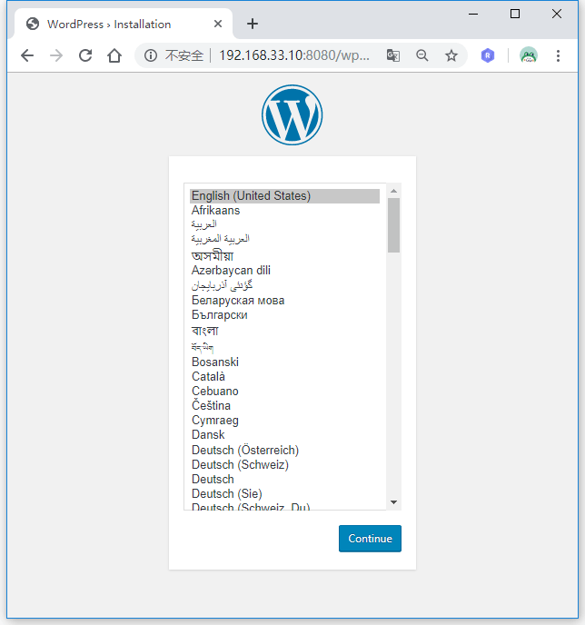
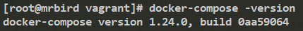
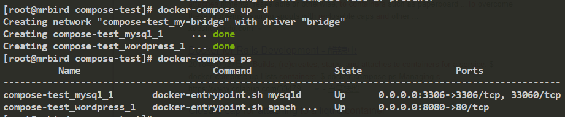
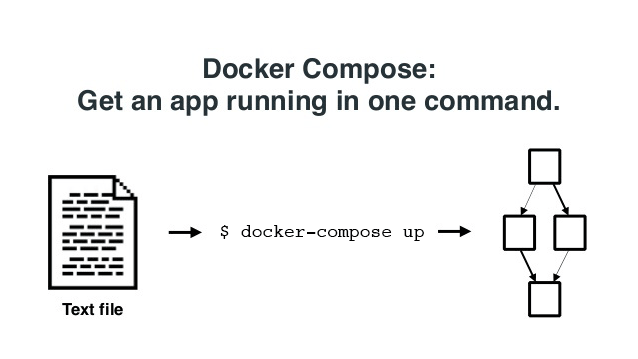
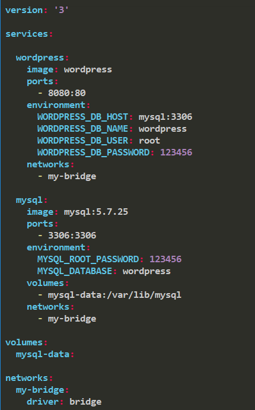

部署一个应用可能需要用到多个Docker容器，比如MySQL，Redis，Nginx等，单独的去管理每个容器可能会比较麻烦。Docker Compose可以通过一个yml文件来统一管理这些容器，可以极大简化我们的应用部署过程。这里以部署WordPress为例，介绍如何使用Docker Compose去统一管理多个Docker容器。
先来看看不用Docker Compose时部署WordPress的步骤。
Docker部署WordPress
安装MySQL
Docker拉取MySQL镜像：
1 | docker pull mysql:5.7.25 |
创建MySQL容器:
1 | docker run -d --name mysql -v mysql:/var/lib/mysql -e MYSQL_ROOT_PASSWORD=123456 -e MYSQL_DATABASE=wordpress -p 3306:3306 mysql:5.7.25 |
安装WordPress
Docker拉取WordPress镜像：
1 | docker pull wordpress |
创建WordPress容器：
1 | docker run -d -p 8080:80 --link mysql -e WORDPRESS_DB_HOST=mysql:3306 -e WORDPRESS_DB_USER=root -e WORDPRESS_DB_PASSWORD=123456 -e WORDPRESS_DB_NAME=wordpress wordpress |
查看是否成功：

Docker Compose部署WordPress
接下来看一下如何使用Docker Compose部署WordPress。在此之前，我们需要先删除上面创建的两个容器，然后安装Docker Compose，安装教程：https://docs.docker.com/compose/install/。
查看是否安装成功：

编写一个docker-compose.yml：
1 | vim docker-compose.yml |
内容如下：
1 | version: '3' |
然后执行命令docker-compose up -d运行：

查看WordPress是否部署成功：
docker-compose.yml
上面例子中我们通过一个docker-compose.yml文件，运行docker-compose up命令一次性创建了两个容器：

docker-compose.yml一般包含三个部分:services、networks和volumes。
services
一个service代表一个container，可以从Docker Hub的image创建，也可以通过本地的dockerfile创建的image来创建。
service类似于docker run，docker run支持的选项 service也可以用。
举两个例子:
基于镜像：
1 | services: |
类似于命令：
1 | docker run -d --network my-bridge -v mysql-data:/var/lib/mysql mysql:5.7.25 |
基于dockerfile：
1 | services: |
基于当前目录下worker/文件夹里的dockerfile构建container。
networks
一个networks的例子：
1 | networks: |
等价于：
1 | docker network create -d bridge my-bridge |
volumes
一个volumes的例子：
1 | volumes: |
等价于
1 | docker volume create mysql-data |
现在回头看看刚刚的yml文件:

version: 3表示基于第三版本docker-compose.yml语法构建，然后创建了两个容器wordpress和mysql，一个volume——mysql-data，一个network，名称为my-bridge，采用bridge网络模式。
在wordpress的定义中，使用image指定了基于wordpress镜像构建，ports进行端口映射，environment配置了wordpress镜像支持的环境变量，指定网络为my-bridge。
mysql的定义和wordpress类似，不再赘述。
更多docker-compose.yml支持的命令可以参考：https://www.jianshu.com/p/2217cfed29d7。
docker-compose命令
看看docker-compose支持哪些命令：
1 | [root@mrbird vagrant]# docker-compose |
查看运行中的容器：
1 | docker-compose ps |
停止：
1 | docker-compose stop |
启动：
1 | docker-compose start |
停止并删除（删除创建的network，volume，container）：
1 | docker-compose down |